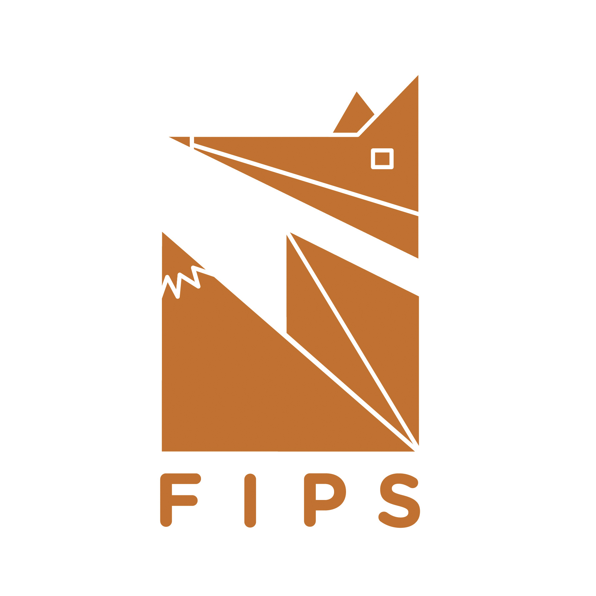

FIPS - Branding design for a parcel service company

Created via Illustrator & Indesign
This project is based on a randomly selected combination between an animal and company to create a new brand through logo and different product which include a primary logo, a stationery set, and applications. What I get is a fox and delivery company. I used several geometric shapes to form a rectangle like fox to represent the box commonly used in parcel service company. For the font of this logo, I used Gotham Rounded to connect the characteristic of fox which is tact and smart